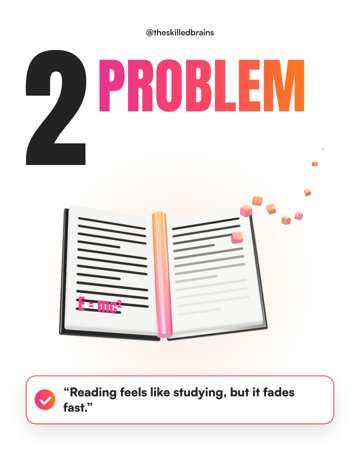
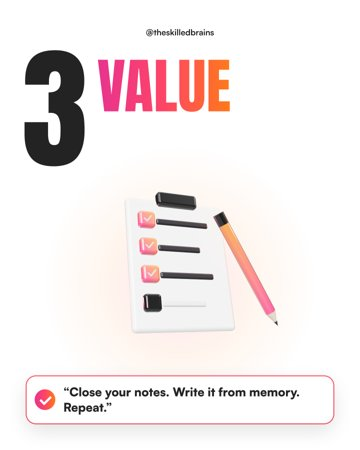
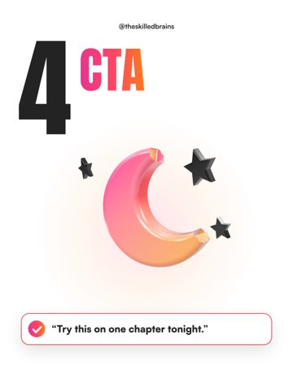
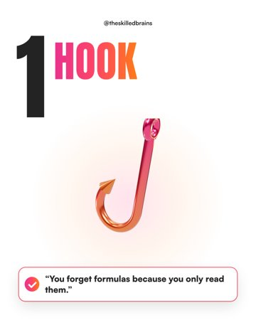

@theskilledbrains 2026 edition
5
Instagram
rules that
changed
in 2026
Check them before your next post.
@theskilledbrains update 1/5
Pick 3 to 5 that say what the post is about.
5 Instagram rules that changed this year.
#instagramtips #contentcreator #reels
#socialmedia #creatorgrowth #explorepage
5/5
@theskilledbrains update 2/5
Make posts people DM to a friend.
this one
counts most
@theskilledbrains update 3/5
Weak first slide? Long-press, drag, done.
Edit carouselDone




@theskilledbrains update 4/5
4
Trial Reels
on a schedule
Test on non-followers first. Now you can schedule it.
Trial
Shown to non-followers first
Schedule
Tomorrow, 7:30 PM
@theskilledbrains update 5/5
Mostly reposts? Instagram stops recommending you.
Original
@theskilledbrains save for later
Save this
for your next post
Comment “Rules”
I’ll DM you the full 2026 checklist.
+ Follow